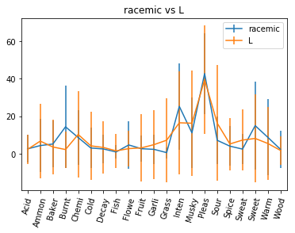
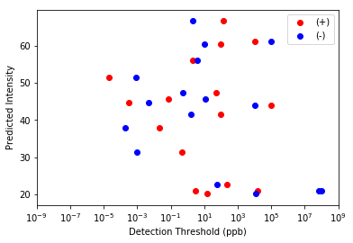

Preliminaries
Contents
Preliminaries#
%load_ext autoreload
%autoreload 2
import __init__ as a
---------------------------------------------------------------------------
ModuleNotFoundError Traceback (most recent call last)
<ipython-input-8-2e3ef7d8db2a> in <module>
----> 1 import __init__ as a
c:\Users\Owner\Documents\liyahswebsite\enantiomerlist\__init__.py in <module>
42 # sys.path.append(path)
43
---> 44 from opc_python.gerkin import dream
45 from opc_python.utils import loading
46 # Load descriptors, CIDs, and dilutions for DREAM molecules
ModuleNotFoundError: No module named 'opc_python'
Load data from the DREAM challenge#
# Load the CIDs from DREAM data set
dream_CIDs = a.loading.get_CIDs(['training','leaderboard','testset'])
dream_CID_dilutions = a.loading.get_CID_dilutions(['training','leaderboard','testset'])
---------------------------------------------------------------------------
AttributeError Traceback (most recent call last)
<ipython-input-5-d68e2209ed95> in <module>
----> 1 dream_CIDs = model_helpers.loading.get_CIDs(['training','leaderboard','testset']) # Load the DREAM CIDs
2 dream_CID_dilutions = model_helpers.loading.get_CID_dilutions(['training','leaderboard','testset'])
AttributeError: module 'Utils' has no attribute 'loading'
# Load the DREAM SMILES strings
dream_smiles = a.get_dream_smiles(dream_CIDs)
# Get isomeric SMILES from DREAM dataset
isomeric_CIDs = a.find_isomers(dream_CIDs,dream_smiles)
# Show the isomeric pairs from the DREAM challenge
if a.HAS_OBABEL:
a.show_isomers(isomeric_CIDs,dream_CIDs,dream_smiles)
# Load DREAM perceptual data
dream_perceptual_data = a.loading.load_perceptual_data(['training','leaderboard','testset'])
Y_dream = a.dream.make_Y(dream_perceptual_data)
# We must also have an imputed version that we can use as input to the algorithm since it will not work with NaNs.
Y_dream_imputed = a.dream.make_Y(dream_perceptual_data, imputer='median')
isomeric_index = 0 # The first isomeric pair, which should be racemic vs L-something
a.plot_isomer_ratings(dream_perceptual_data,isomeric_CIDs[isomeric_index],('racemic','L'))

shadmany_smiles = a.load_other_smiles(shadmany=True)
shadmany_data = a.load_data('shadmany')
Loading molecules from the Shadmany enantiomer collection...
Loaded 32 molecules
shadmany_data
| Molecule Name | Pubchem ID # | Detection Threshold | Detection Units | Normalized Detection Threshold | Molecule Odour | |
|---|---|---|---|---|---|---|
| C=C(C)[C@@H]1CC=C(C)C(=O)C1 | (4S)-(+)-carvone | 16724 | 1.30E+02 | ppb | 1.300000e+02 | caraway, fresh herbal |
| C=C(C)[C@H]1CC=C(C)C(=O)C1 | (4R)-(-)-carvone | 439570 | 2.00E+00 | ppb | 2.000000e+00 | sweet spearmint, fresh herbal |
| C=C(C)[C@@H]1CCC2=CC(=O)C[C@@H](C)[C@]2(C)C1 | (4R,4aS,6R)-(+) nootkatone | 1268142 | 1.50E+01 | ppm | 1.500000e+04 | grapefruit odor |
| C=C(C)[C@H]1CCC2=CC(=O)C[C@H](C)[C@@]2(C)C1 | (4S,4aR,6S)-(-) nootkatone | 7567181 | 6.60E+04 | ppm | 6.600000e+07 | woody and spicy |
| C=C1CCCC(C)(C)[C@@H]1/C=C/C(C)=O | (S)-(+)-gamma-ionone | 11194862 | 7.00E-02 | ppb water | 7.000000e-02 | Linear, very pleasant, floral, green, woody od... |
| C=C1CCCC(C)(C)[C@H]1/C=C/C(C)=O | (R)-(-)-gamma-ionone | 11389922 | 1.10E+01 | ppb water | 1.100000e+01 | Weak green, fruity, pineapple-like odor with m... |
| C=C[C@@H](O)CCCCC | (S)-(+)-1-octen-3-ol | 2724898 | 1.00E+02 | ppb in aqueous ethanol | 1.000000e+02 | moldy, grassy, artificial; also desribed as he... |
| C=C[C@H](O)CCCCC | (R)-(-)-1-octen-3-ol | 6992244 | 1.00E+01 | ppb in aqueous ethanol | 1.000000e+01 | fruity, genuine mushroom-like; also desribed a... |
| C=C[C@@]1(C)CC[C@H]([C@@H](C)C=O)O1 | (2R,2\'R,5\'R)-Lilac aldehyde | 71587756 | 2.20E+01 | ng | 2.200000e-02 | flowery |
| C=C[C@]1(C)CC[C@@H]([C@H](C)C=O)O1 | (2S,2\'S,5\'S)-Lilac aldehyde | 441572 | 2.00E-01 | ng | 2.000000e-04 | fresh, flowery |
| CC(=O)/C=C/[C@H]1C(C)=CC[C@@H](C)C1(C)C | (1S,5R)-(+)-cis-alpha-irone | 5281521 | 1.00E+05 | ppb | 1.000000e+05 | iris, sweet irone odour, woody ionone, floral,... |
| CC(=O)/C=C/[C@@H]1C(C)=CC[C@H](C)C1(C)C | (1R,5S)-(-)-cis-alpha-irone | 11009095 | 1.00E+04 | ppb | 1.000000e+04 | odourless (Galfry, et.al, by GC sniffing); In ... |
| CC(C)=C[C@@H]1C[C@H](C)CCO1 | (4S,2R)-(+)-cis-rose oxide | 6432154 | 5.00E+01 | ppb | 5.000000e+01 | herbal, green floral, hay green, earthy, heavy... |
| CC(C)=C[C@H]1C[C@@H](C)CCO1 | (4R,2S)-(-)-cis-rose oxide | 1712087 | 5.00E-01 | ppb | 5.000000e-01 | floral green with clean sharp, light, rose gre... |
| CC1=CC[C@H](C(C)(C)S)CC1 | (R)-(+)-1-p-menthen- 8-thiol | 44152305 | 2.00E-05 | ppb | 2.000000e-05 | pleasant odor of fresh grapefruit juice |
| CC1=CC[C@@H](C(C)(C)S)CC1 | (S)-(-)-1-p-menthen-8-thiol | 10877566 | 8.00E-04 | ppb | 8.000000e-04 | weak, nonspecific odor. |
| C[C@H]1CCCCCCCCCCCCC(=O)C1 | (S)-(+)- muscone/(S)-(+)-3-methyl cyclopentade... | 7160827 | 2.33E+02 | ppb | 2.330000e+02 | poor, weakly musky |
| C[C@@H]1CCCCCCCCCCCCC(=O)C1 | (R)-(-)- muscone/(R)--3-methyl cyclopentadecanone | 7160826 | 6.10E+01 | ppb | 6.100000e+01 | rich, powerful, musky |
| C[C@@H]1COCc2cc3c(cc21)C(C)(C)[C@H](C)C3(C)C | (4R,7R)-(+)-galaxolide | 14177988 | 4.40E-01 | ppb in air | 4.400000e-01 | weak to almost odorless |
| C[C@H]1COCc2cc3c(cc21)C(C)(C)[C@@H](C)C3(C)C | (4S,7S)-(-)-galaxolide | 14177991 | 1.00E-03 | ppb in air | 1.000000e-03 | powerful musk odor |
| C/C=C/C(=O)[C@H]1C(C)=CCCC1(C)C | (R)-(+)-(E)-alpha-damascone | 1268130 | 1.00E+02 | ppb | 1.000000e+02 | odor character was reminiscent of rose petals,... |
| C/C=C/C(=O)[C@@H]1C(C)=CCCC1(C)C | (S)-(-)-(E)-alpha-damascone | 1268132 | 1.50E+00 | ppb | 1.500000e+00 | floral, reminiscent of rose petals and charact... |
| CC[C@@H](C)C=O | (S)-(+)-2-methylbutanal | 6971249 | 1.00E+01 | ppm in air | 1.000000e+04 | pungent, fresh, fruity (Boelens, et. al.); Pec... |
| CC[C@H](C)C=O | (R)-(-)-2-methylbutanal | 6971248 | 1.00E+02 | ppm in air | 1.000000e+05 | pungent, caprylic (Boelens, et. al.); Peculiar... |
| CC/C=C(\C)[C@H](O)CCCCC | (R)-(+)-undecavertol | 40428776 | 3.10E-01 | ng/L air | 3.100000e-04 | similar to the racemate smell floral, green, f... |
| CC/C=C(\C)C(O)CCCCC | (S)-(-)-undecavertol | 40565487 | 4.70E+00 | ng/L air | 4.700000e-03 | green fruit with a hint of balsam pinefiru and... |
| CC/C=C/C[C@H]1C(=O)CC[C@H]1CC(=O)OC | (1R,2S)-(+)-(Z) Methyl epijasmonate | 6427970 | 3.00E+00 | ppb | 3.000000e+00 | strong, jasmine- like odor |
| CC/C=C\C[C@@H]1C(=O)CC[C@@H]1CC(=O)OC | (1S,2R)-(-)-(Z) Methyl epijasmonate | 12566815 | 1.00E+99 | ppb | 1.000000e+99 | odorless |
| CCC[C@@H]1CCO[C@H](C)S1 | (2S,4R)-(+) cis-2-methyl-4-propyl-1,3-oxathiane | 6931728 | 2.00E+00 | ppb | 2.000000e+00 | \xe2\x80\x9ctypical sulfurous, with a rubbery ... |
| CCC[C@H]1CCO[C@@H](C)S1 | (2R,4S)-(-) cis-2-methyl-4-propyl-1,3-oxathiane | 6931725 | 4.00E+00 | ppb | 4.000000e+00 | was found weaker (compare thresholds)and \xe2\... |
| CCCCC[C@@H]1C(=O)CC[C@@H]1CC(=O)OC | (1R,2S)-(+)-Methyl epidihydrojasmonate | 1738122 | 1.50E+01 | ppb | 1.500000e+01 | intensely floral, jasminelike, bright, cis-jas... |
| CCCCC[C@H]1C(=O)CC[C@H]1CC(=O)OC | (1S,2R)-(-)-Methyl epidihydrojasmonate | 1738127 | 1.25E+04 | ppb | 1.250000e+04 | herbal, fatty, tea-like, tobacco, \xc3\x9f-dam... |
Compute DREAM molecule features and place into a data frame#
# Compute Morgan features for DREAM molecules
all_smiles = list(set(dream_smiles + shadmany_smiles))
morgan_sim_all = a.smiles_to_morgan_sim(all_smiles,all_smiles)
507 similarity features for 507 molecules
# Compute NSPDK features for DREAM molecules
if a.HAS_OBABEL:
nspdk_all = a.smiles_to_nspdk(all_smiles)
else:
nspdk_all = []
# Compute Dragon or Mordred features for DREAM molecules
if a.USE_DRAGON:
dragon_all = a.smiles_to_dragon(all_smiles)
else:
dragon_all = a.smiles_to_mordred(all_smiles)
Convering SMILES string to Mol format...
Computing 3D coordinates...
Computing Mordred features...
100%|██████████| 507/507 [00:17<00:00, 29.34it/s]
There are 507 molecules and 1824 features
# Combine all DREAM molecular features into one dataframe
molecular_data_all = dragon_all.join(nspdk_all).join(morgan_sim_all).astype('float')
molecular_data_dream = molecular_data_all.loc[dream_smiles]
# Reindex by the CIDs instead of the SMILES strings
assert list(molecular_data_dream.index)==dream_smiles
molecular_data_dream.index = dream_CIDs
# Compute the final DREAM molecular features matrix.
X_dream,good1,good2,means,stds,imputer = a.dream.make_X(molecular_data_dream,dream_CID_dilutions)
The X matrix now has shape (952x1697) molecules by non-NaN good molecular descriptors
dummy_intensity = -3.0
shadmany_CIDs = [shadmany_data.loc[smile]['Pubchem ID #'] for smile in shadmany_smiles]
shadmany_CID_dilutions = [(shadmany_data.loc[smile]['Pubchem ID #'],dummy_intensity) for smile in shadmany_smiles]
molecular_data_shadmany = molecular_data_all.loc[shadmany_smiles]
assert list(molecular_data_shadmany.index) == shadmany_smiles
molecular_data_shadmany.index = shadmany_CIDs
X_shadmany = a.dream.make_X(molecular_data_shadmany,shadmany_CID_dilutions,
good1=good1,good2=good2,means=means,stds=stds)[0]
# Reorder molecules to match the order in the spreadsheet
X_shadmany = X_shadmany.loc[[(cid,dummy_intensity) for cid in shadmany_data['Pubchem ID #']]]
# Confirm that the order matches
assert list(X_shadmany.index.get_level_values('CID')) == list(shadmany_data['Pubchem ID #'])
The X matrix now has shape (32x1697) molecules by non-NaN good molecular descriptors
Fit model to DREAM data#
# Model for DREAM data
rfs = {}
n_estimators = 25
these_descriptors = a.descriptors[:1] # Just intensity
Y_dream_mean = Y_dream.stack('Descriptor').mean(axis=1).unstack('Descriptor')
for i,descriptor in enumerate(these_descriptors):
print("%d. Fitting model for %s..." % (i+1,descriptor))
rfs[descriptor] = a.RandomForestRegressor(n_estimators=n_estimators)
valid = Y_dream_mean[descriptor].notnull()
rfs[descriptor].fit(X_dream.loc[valid].as_matrix(),Y_dream_mean[descriptor].loc[valid].as_matrix())
1. Fitting model for Intensity...
# Check model quality by cross-validation on the DREAM data.
from sklearn.model_selection import GroupShuffleSplit
x = X_dream.loc[valid]
y = Y_dream_mean[descriptor].loc[valid]
groups = x.index.get_level_values('CID')
ss = GroupShuffleSplit(n_splits=3)
for train,test in ss.split(x,groups=groups):
rfs['Intensity'] = a.RandomForestRegressor(n_estimators=25,random_state=0)
rfs['Intensity'].fit(x.iloc[train].as_matrix(),y.iloc[train].as_matrix())
predicted = rfs['Intensity'].predict(x.iloc[test].as_matrix())
observed = y.iloc[test]
print(a.np.corrcoef(predicted,observed)[0,1])
0.693696324394
0.663224096853
0.651281217356
Compute predictions and display#
a.compare_smiles_lengths(dream_smiles,shadmany_smiles,['DREAM','Enantiomers']);
t=-10.354, p=6.46e-23
a.compare_molecular_weights(molecular_data_dream,molecular_data_shadmany,['DREAM','Enantiomers']);
t=-3.964, p=8.42e-05

predictions = a.make_predictions(rfs,X_shadmany,['Intensity'])
plus_pred = predictions.iloc[0::2]['Intensity'].values
minus_pred = predictions.iloc[1::2]['Intensity'].values
a.plt.scatter(plus_pred,minus_pred)
a.plt.plot([0,100],[0,100],'--')
a.plt.xlabel('(+) intensity prediction')
a.plt.ylabel('(-) intensity prediction')
a.plt.show()

plus_thresh = shadmany_data.iloc[0::2]['Normalized Detection Threshold'].values
minus_thresh = shadmany_data.iloc[1::2]['Normalized Detection Threshold'].values
plus_thresh = a.np.clip(plus_thresh,1e-8,1e8)
minus_thresh = a.np.clip(minus_thresh,1e-8,1e8)
a.plt.scatter(plus_thresh,minus_thresh)
a.plt.plot([1e-7,1e9],[1e-7,1e9],'--')
a.plt.xlim(1e-7,1e9)
a.plt.ylim(1e-7,1e9)
a.plt.xscale('log')
a.plt.yscale('log')
a.plt.xlabel('(+) detection threshold (ppb)')
a.plt.ylabel('(-) detection threshold (ppb)')
a.plt.show()

delta_pred = plus_pred - minus_pred
delta_thresh = a.np.log10(minus_thresh / plus_thresh)
inds = delta_thresh.argsort()
delta_pred = delta_pred[inds]
delta_thresh = delta_thresh[inds]
negative = delta_thresh < 0
delta_thresh[negative] *= -1
delta_pred[negative] *= -1
a.plt.scatter(delta_pred,delta_thresh)
a.plt.xlabel('Predicted intensity difference (+) vs (-)')
a.plt.ylabel('Actual detection threshold difference\n in log units (+) vs (-)')
a.plt.plot([0,0],[0,8],'--')
a.plt.xlim(-1,1)
a.plt.show()

print("Correlation coefficient R = %.3f" % a.np.corrcoef(delta_pred,delta_thresh)[0,1])
Correlation coefficient R = nan
/home/rgerkin/miniconda3/lib/python3.6/site-packages/numpy/lib/function_base.py:3167: RuntimeWarning: invalid value encountered in true_divide
c /= stddev[:, None]
/home/rgerkin/miniconda3/lib/python3.6/site-packages/numpy/lib/function_base.py:3168: RuntimeWarning: invalid value encountered in true_divide
c /= stddev[None, :]
a.plt.scatter(plus_thresh,plus_pred,color='r',label='(+)')
a.plt.scatter(minus_thresh,minus_pred,color='b',label='(-)')
a.plt.xscale('log')
a.plt.xlim(1e-9,1e9)
a.plt.xlabel('Detection Threshold (ppb)')
a.plt.ylabel('Predicted Intensity')
a.plt.legend()
a.plt.show()
print("Correlation between predicted intensity and actual detection thresholds is R=%.3f" % \
a.np.corrcoef(a.np.concatenate((plus_thresh,minus_thresh)),a.np.concatenate((plus_pred,minus_pred)))[0,1])

Correlation between predicted intensity and actual detection thresholds is R=-0.359